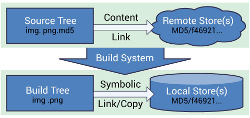

Data Files for Testing#
Summary#
This page gives an overview of how data files are managed within Mantid.
Motivation#
Some unit tests use a small amount of data that is created by the test
harness and others load data from a file. Take the example of
ApplyCalibrationTest. In its first test, testSimple, it creates a
workspace with 10 detectors using
WorkspaceCreationHelper::create2DWorkspaceWithFullInstrument(). In
the second test, testComplex, it reads a file
unit_testing/MAPS_Definition_Reduced.xml, which contains
the definition of a MAPS instrument with the number of detectors reduced
much to ensure it is read quickly but preserving the other properties of
this instrument. However, new tests should avoid even loading of this
nature unless there is a strong justification for doing so.
Main issues:
need to store data, mainly for testing, alongside the code
some data needs to be versioned
merging system tests back with main code requires handling large data files
git is bad at handling binary files
Possible solutions:
CMake’s ExternalData
don’t have any reference to data in git and force developers to manage the data stored on a file server
extensions to git, e.g. git-fat, git-annex to deal with large files
We have chosen to use CMake as it is already in use as a build system and it doesn’t involve introducing extra work with git.
CMake’s External Data#

Image originated at http://www.kitware.com/source/home/post/107#
Terminology:
content - the real data
content link - text file containing a hash (MD5) of the real content. The filename is the filename of the real data plus the
.md5extensionobject - a file that stores the real data and whose name is the
MD5hash of the content
Overview:
git does not store any content, it only stores content links
content is stored on a remote server that can be accessed via a
httplinkrunning cmake sets up build rules so that the content is downloaded when dependent projects are built
Local Object Store#
CMake does not download content directly but stores the content in a
Local Object Store, whose location is defined by the
ExternalData_OBJECT_STORES CMake variable. This allows it to share
content between build trees, especially useful for continuous
integration servers.
Binary Root#
The final step is to create the real filename and symbolic link (copy
on windows) it to the object in the local object store. The location of
the real filenames is controlled by the ExternalData_BINARY_ROOT
CMake variable and defaults to build/ExternalData.
Using Existing Data#
For unit testings, there are two places files may be found:
…/Testing/Data/ for unit test, doc test, and system test data
…/instrument/unit_testing for test IDF files
For system testings, there is one more location developers use to dump reference data files:
…/Testing/SystemTests/tests/framework/reference
Generally speaking, the testing system will look for the default locations for corresponding tests:
…/Testing/Data/DocTest
…/Testing/Data/SystemTest
…/Testing/Data/UnitTest
However, it is known that some developers like to reuse the same data files for different type of tests, therefore sometime the DocTest and SystemTest is using data from UnitTest, which means you should fetch all testing data before trying to run any test locally. Furthermore, this location is mostly considered as a centralized location for all testing data. But some groups prefer to treat this location for storing input testing data only, therefore the testing system will look for the reference folder mentioned above if it cannot find the reference data here. Overall, it is important to talk to the senior developers in your team to learn the preferred location for storing testing data.
Adding A New File(s)#
A helper git command is defined called add-test-data. Before first use, the command must be
aliased using the procedure outlined below. Once setup,
it would be called like this:
git add-test-data Testing/Data/UnitTest/INST12345.nxs
This does the following:
computes the MD5 hash of the data, e.g.
d6948514d78db7fe251efb6cce4a9b83stores the MD5 hash in a file called
Testing/Data/UnitTest/INST12345.nxs.md5renames the original data file to be its md5 sum
Testing/Data/UnitTest/d6948514d78db7fe251efb6cce4a9b83runs
git add Testing/Data/UnitTest/INST12345.nxs.md5tells the user to upload the file(s),
d6948514d78db7fe251efb6cce4a9b83, to the remote store
Notes:
For the change to have effect, re-run
cmakein the build areaYou need to use a shell to add & modify data files under Windows in this way. Not every shell works as described, though Github for Windows shell would allow you to do everything described here step by step without deviations.
Note, that ILL test data should be placed under
ILL/${INSTRUMENT}subdirectories (e.g.ILL/IN16B), and should not contain any instrument prefix in the file name.
Updating File(s)#
The workflow is the same as adding new files except that the developer must first put the new version of the file in the right place. For the example above, it would be Testing/Data/UnitTest/INST12345.nxs. Then the new .md5 file and associated renamed file will be created. git diff will show that change to the contents of Testing/Data/UnitTest/INST12345.nxs.md5 and that there is an untracked file with the md5 sum for a name.
Developer Setup#
To add the add-test-data command alias to git run
git config alias.add-test-data '!bash -c "tools/Development/git/git-add-test-data $*"'
in the git bash shell (script source). The single quotes are important so that bash doesn’t expand the exclamation mark as a variable.
It is advised that CMake is told where to put the “real” data as the
default is $HOME/MantidExternalData on Linux/Mac or
C:/MantidExternalData on Windows. Over time the store will grow so
it is recommended that it be placed on a disk with a large amount of
space. CMake uses the MANTID_DATA_STORE variable to define where the
data is stored.
The data itself can be downloaded from a local mirror as well to decrease build times.
This is controlled by the DATA_STORE_MIRROR variable which can be “all” (default), “none”, “ornl”, or “ral”.
The variable will insert additional data mirrors that facilities have created.
If the data is not found in a local mirror, it will be downloaded from the central data repository.
Example cmake command:#
Linux/Mac:
mkdir -p build
cmake -DMANTID_DATA_STORE=/home/mgigg/Data/LocalObjectStore ../Code/Mantid
Windows:
mkdir build
cmake -DMANTID_DATA_STORE=D:/Data/LocalObjectStore ../Code/Mantid
Setting With Dropbox:#
This is for people in the ORNL dropbox share and has the effect of
reducing external network traffic. There is a gist for
getting dropbox running on linux. Instead of defining the
MANTID_DATA_STORE in cmake, it is simplest to create a symbolic
link
ln -s ~/Dropbox\ \(ORNL\)/MantidExternalData ~
Then everything will happen automatically using CMake’s default behavior.
Proxy Settings#
If you are sitting behind a proxy server then the shell or Visual studio
needs to know about the proxy server. You must set the http_proxy
environment variable to http://HOSTNAME:PORT.
On Windows you go to Control Panel->System and
Security->System->Advanced System settings->Environment Variables and
click New... to add a variable.
On Linux/Mac you will need to set the variable in the shell profile or
on Linux you can set it system wide in /etc/environment.
Troubleshooting#
If you find that your tests cannot find the data they require check the following gotchas:
Check that you have re-run CMake in the build directory
Check that you have uploaded the original file renamed as a hash to the Mantid file repository
Check that you have removed any user defined data search directories in
~/.mantidCheck that you have rebuilt the test executable you’re trying to run
Check that you have rebuilt the SystemTestData target